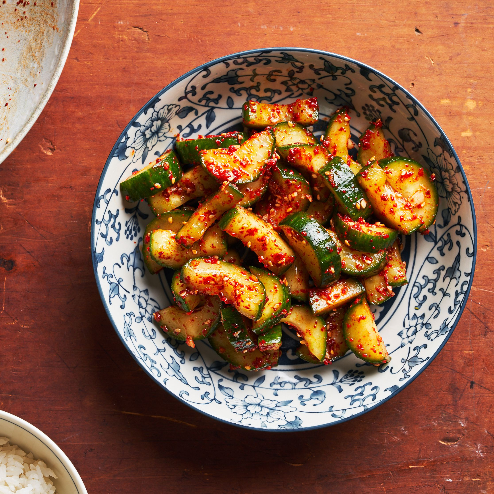

Korean Pickled Cucumbers

Description
Spicy Korean cucumber pickles, called oi muchim, are a typical side dish.
Ingredients
- Cucumbers
- Suger
- Salt
- Vinegar
- Gochugaru
Steps
- Cut cucumbers into wedges
- Sprinkle cucumbers with sugar, salt and gochugaru, toss to combine
- Add vinegar to cucumbers and stir
- Let cucumbers sit for at least 20 minutes before serving